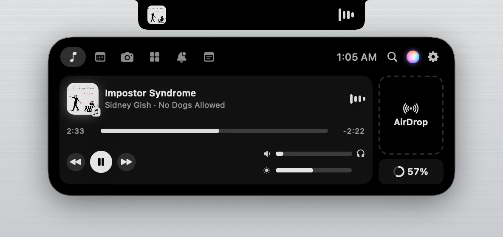
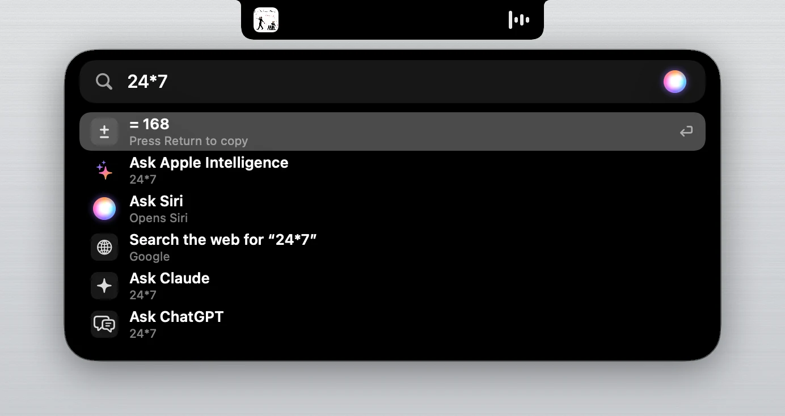
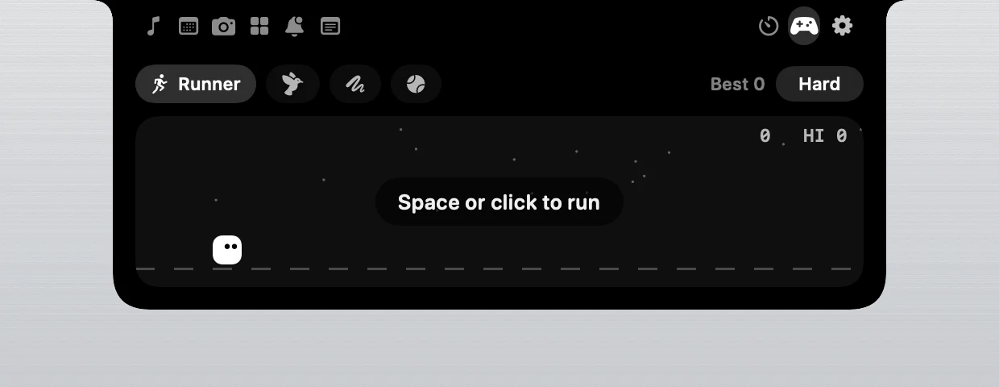
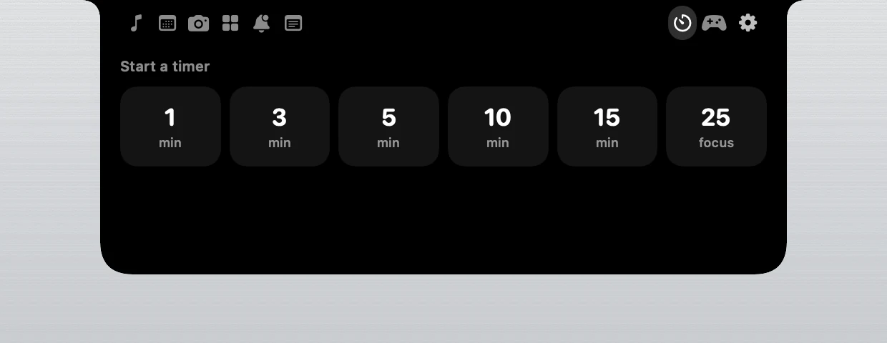
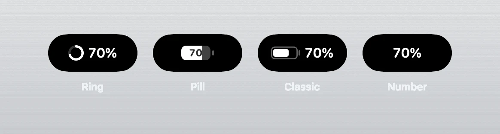

A Dynamic Island for every Mac
NotchPal turns your MacBook's notch into a living island, the way Apple's newest MacBook Pro does it: search, Apple Intelligence, Live Activities and your music, right at the top of the screen. Free and open source.
For macOS 14 Sonoma or later on Apple silicon.
ClickTap the notch at the top of this page, or press ⌥ Space.

Click the notch, and the island floats
The island splits off the notch and floats just below it like a droplet, then melts back in when you're done. Swipe down on the notch with two fingers to open it, and push up to close it. Bring the pointer up under the notch and it gets pulled in.

Search and ask, from anywhere
Press ⌥ Space and a search bar drops out of the notch. Open apps, files and System Settings, do maths as you type, start a timer or jot down a note. Ask a question and Apple Intelligence answers right in the notch, privately on your Mac, or hand it to Siri, Claude or ChatGPT.
Apple Intelligence needs an Apple silicon Mac on macOS 26 or later, with Apple Intelligence turned on.
Live Activities, like on iPhone
Calls in FaceTime, Zoom, Meet, Teams and WhatsApp, Voice Memos recordings and screen recordings show in the notch with a running clock. When two things are live, the second splits off like a droplet. Switch to AirPods and the notch tells you where your sound is playing.
Look at the notch at the top of this page while you read this.
Everything else in the notch
- Music from any app
- Spotify, Apple Music, YouTube in your browser and more, with album art and a visualiser tinted to the cover.
- A soft glow
- A faint, still light at rest. It pulses with a new song, counts down a timer, and turns green while the camera is on.
- Mirror
- Check yourself before a call, with Centre Stage and reactions. The camera is only on while the mirror is open.
- Calendar
- Today's events, with one-click Join for Zoom, Meet, Teams, FaceTime and Webex.
- Notes, timers and games
- A scratchpad that saves itself, quick timers, and Runner, Flappy, Snake and Pong.
- Battery, your way
- A ring, a pill, the classic battery or just the number, in iPhone colours.
- Pal, the notch pet
- Dances to music, munches electricity while charging and naps late at night.
- A tour built in
- New users get a short tour in the notch, and after each update it shows what's new.



Safe by design
Signed updates
Every update is signed with a key that lives inside the security chip of the maker's Mac, and each signature needs his Touch ID. NotchPal refuses any update that isn't signed. Even someone who broke into the GitHub account couldn't push a fake one.
Collects nothing
No account, no tracking and no ads. NotchPal only goes online to ask GitHub, once a day, whether there's a new version, and you can switch that off.
Open source
All the code is public for anyone to read. Official copies only come from this site and github.com/MohammedSaif29/NotchPal.
Want to check your download? In Terminal, shasum -a 256 on the zip should match the fingerprint shown next to it on the release page.
Install it in a minute
- Download NotchPal and double-click the zip.
- Drag NotchPal into Applications, then open it.
- macOS says it can't verify the app. Click Done. NotchPal is free and isn't registered with Apple's paid developer programme yet, which is why macOS asks.
- Open System Settings, then Privacy & Security. Scroll down and click Open Anyway next to NotchPal. You only do this once.
That's it. A short tour in the notch shows you around. If macOS says NotchPal is damaged, run xattr -dr com.apple.quarantine /Applications/NotchPal.app in Terminal and open it again.
Questions
Is NotchPal really free?
Yes. No trial, no subscription and no ads. It's open source under the GNU GPLv3 licence.
Which Macs does it work on?
Any Mac with Apple silicon (M1 or newer) on macOS 14 Sonoma or later. On a Mac without a notch, NotchPal becomes a small pill under the menu bar.
Is it the same as the new MacBook Pro's Dynamic Island?
It brings the same ideas to your Mac: the island floats below the notch when you click it, search and Apple Intelligence live inside it, Live Activities show calls and recordings, and the pointer gets pulled in. NotchPal is made by an independent developer and isn't made by Apple.
Will it drain my battery?
No. When nothing changes, NotchPal stays still and uses almost no energy.
What does NotchPal know about me?
Nothing leaves your Mac. It asks for the camera, your calendar or Accessibility only when you first use a feature that needs it, and it never records anything. Read the privacy page.
How do updates work?
When a new version is out, the notch tells you. Click Update and NotchPal downloads it, checks its signature and restarts by itself. Your settings stay.
Who makes NotchPal?
Mohammed Saif, a student developer. Say hello on LinkedIn. Found a bug or have an idea? Open an issue on GitHub.